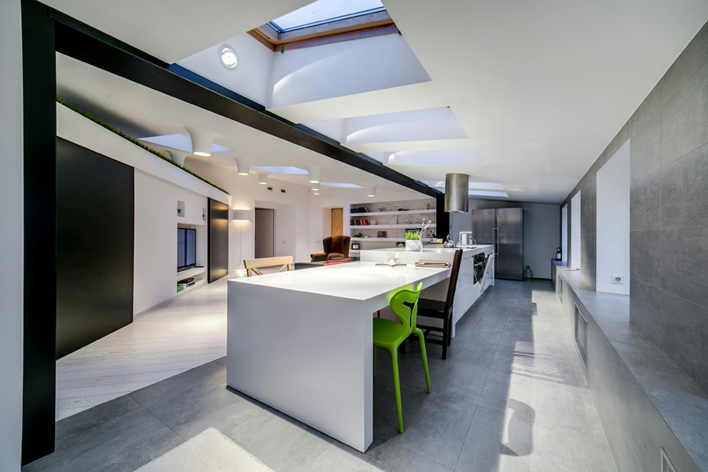

Elektrotechnik in Berlin
Schwerpunkte
Installation, Sanierung, Smart Home
Arbeitsweise
Präzise, sauber, lösungsorientiert
Einsatzbereich
Wohnungen, Häuser und ausgewählte Gewerbeeinheiten
Saubere Elektrotechnik für Wohnen, Arbeiten und moderne Gebäudenutzung
Wir planen und realisieren Elektroinstallationen mit Blick auf Sicherheit, Alltag und spätere Erweiterbarkeit. Ob Sanierung, Neuinstallation oder Smart Home: Unsere Lösungen bleiben verständlich, präzise und sauber ausgeführt.
Elektrotechnik im Überblick
Installation · Licht · Sicherheit · Smart Home

Planung mit System
Wir denken Schaltpunkte, Licht und Verteilung von Anfang an sinnvoll zusammen.
Sicherheit im Bestand
Bei Sanierungen achten wir auf klare Strukturen, normgerechte Ausführung und nachvollziehbare Lösungen.
Technik, die im Alltag funktioniert
Smart-Home-Funktionen werden nur dort eingesetzt, wo sie echten Komfort und Übersicht bringen.
Leistungsprofil
Wir verbinden technische Präzision mit einer Beratung, die auch ohne Fachsprache verständlich bleibt.
Elektroarbeiten müssen sicher, nachvollziehbar und zukunftsfähig sein. Deshalb achten wir auf saubere Planung, klare Ausführung und Lösungen, die im Alltag wirklich funktionieren.
Technische Struktur klar aufbauen
Stromkreise, Verteilungen und Anschlüsse werden so geplant, dass die Anlage übersichtlich und belastbar bleibt.
Nutzung und Atmosphäre gemeinsam denken
Lichtplanung soll nicht nur funktionieren, sondern Räume besser nutzbar und angenehmer machen.
Bestand prüfen und sauber modernisieren
Gerade bei älteren Anlagen braucht es klare Entscheidungen und eine Ausführung, auf die man sich verlassen kann.
Technik mit Blick auf morgen planen
Wir schaffen eine Basis, die spätere Ergänzungen bei Steuerung, Komfort und Energieeinsatz sinnvoll ermöglicht.
Leistungen
Unsere Kernleistungen decken die wichtigen Elektrothemen im Wohn- und Nutzungsbereich ab.
Ob Neuinstallation, Modernisierung oder smarte Steuerung: Wir arbeiten sauber, verständlich und mit einem klaren Blick für die spätere Nutzung.
Installation
Wir realisieren Elektroinstallationen für Neubau, Umbau und Erweiterung mit sauberer Struktur und verlässlicher Ausführung.
- Schalter, Steckdosen, Lichtpunkte und Verteilungen fachgerecht aufbauen
- Technik auf Grundriss, Nutzung und Alltag abstimmen
- Saubere Basis für spätere Anpassungen schaffen
Elektrosanierung
Wir erneuern bestehende Anlagen und bringen Altbau oder Bestand auf einen zeitgemäßen, sicheren und klar geordneten Stand.
- Veraltete Installationen sicher modernisieren
- Leitungsführung und Nutzung neu zusammen denken
- Klare Abstimmung mit Eigentümern und Bewohnern
Smart Home
Intelligente Steuerung setzen wir dort ein, wo sie Komfort, Übersicht und Bedienbarkeit im Alltag wirklich verbessert.
- Licht, Beschattung und ausgewählte Funktionen sinnvoll verbinden
- Technik verständlich erklären und sauber einrichten
- Erweiterbarkeit von Anfang an mitdenken
Projekttypen
Wir arbeiten an Projekten, bei denen Technik sauber geplant und sinnvoll genutzt werden soll.
Je nach Objekt und Nutzung unterscheiden sich Anforderungen deutlich. Deshalb betrachten wir jedes Projekt technisch und praktisch zugleich.
Elektrotechnik für Alltag, Komfort und Sicherheit
Im privaten Bereich stehen klare Bedienung, gute Lichtqualität und eine zuverlässige technische Basis im Vordergrund.
Sanierung mit sauberem Blick auf vorhandene Strukturen
Bestehende Anlagen erfordern Erfahrung, gute Einordnung und Lösungen, die technisch und praktisch dauerhaft passen.
Klare Technik für kleinere gewerbliche Nutzungen
Auch in Büros, Praxen oder Ladenflächen sorgen wir für eine ordentliche Elektrostruktur und eine verlässliche Inbetriebnahme.
Arbeitsweise
Schritt 01
Schritt 02
Schritt 03
Wir arbeiten so, dass Technik nachvollziehbar geplant und zuverlässig in Betrieb genommen wird.
Gute Elektrotechnik entsteht aus sauberer Vorbereitung, klaren Entscheidungen und einer Ausführung, die auch im Detail ordentlich bleibt. Genau darauf richten wir unsere Projekte aus.
Anforderungen sauber aufnehmen
Zu Beginn klären wir Nutzung, Bestand und technische Prioritäten, damit die Lösung nicht nur auf dem Papier funktioniert.
Technik klar strukturieren
Schaltungen, Verteilungen und Schnittstellen werden so aufgebaut, dass das System langfristig übersichtlich bleibt.
Sauber ausführen und sicher übergeben
Wir legen Wert auf ordentliche Montage, klare Abstimmung und eine Übergabe, bei der die Anlage nachvollziehbar funktioniert.
Sauber im Detail
Ob Schalter, Lichtszene oder Verteilung: Gute Elektrotechnik zeigt sich oft dort, wo Funktion und Ausführung präzise zusammenkommen.
FAQ
Häufige Fragen zu unseren Elektroarbeiten in Berlin
Übernehmen Sie auch Elektrosanierungen im Altbau?
Ja. Gerade im Bestand prüfen wir vorhandene Strukturen sorgfältig und setzen Modernisierungen sauber und nachvollziehbar um.
Planen Sie auch Licht und Schaltkonzepte mit?
Ja. Wir betrachten Licht nicht isoliert, sondern im Zusammenhang mit Nutzung, Raumgefühl und praktischer Bedienung.
Wann ist Smart Home sinnvoll?
Dann, wenn es den Alltag wirklich vereinfacht. Wir empfehlen Lösungen, die zum Gebäude und zur gewünschten Nutzung passen.
Arbeiten Sie nur für private Projekte?
Nein. Neben Wohnungen und Häusern betreuen wir auch ausgewählte kleinere Gewerbeeinheiten mit klaren technischen Anforderungen.
Kontakt
Sie planen eine Elektroinstallation, Sanierung oder smarte Erweiterung?
Wir beraten Sie klar, planen sauber und setzen die Technik so um, dass sie im Alltag zuverlässig und nachvollziehbar funktioniert.
Voltwerk Berlin
Für Elektrotechnik mit sauberer Ausführung, verständlicher Beratung und Lösungen, die langfristig passen.